Render panel
1.0Overview
It turns your captures and views into a render queue that runs on its own.
At the top, Add Job creates a render job and Run All renders every job. Beside them sit a contact sheet for all jobs at once and a toggle to skip files you’ve already rendered.
Skip Existing — skips shots whose output file is already on disk (matched by name), so a re-run picks up where the last one stopped.
Output folder — the folder icon in the panel header opens the last render’s output folder in your file browser (or the first job’s, before anything has rendered).
At the bottom, Export All to Farm File writes every job into one .blend for rendering elsewhere.
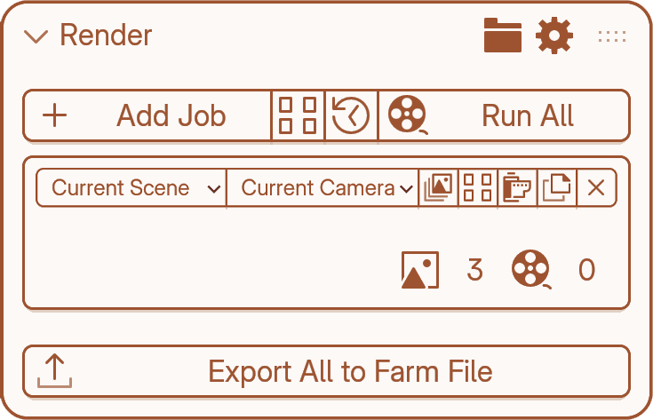
Render job
A job renders each capture through each view (2 captures × 2 views = 4 renders).
Captures — which captures this job renders.
Views — which views it renders through.
Job variant — opens the render setup.
Contact Sheet — a grid of images this job will produce.
Render — renders this job on its own.
Duplicate Job — copies the job with all its settings.
Delete Job — removes it.
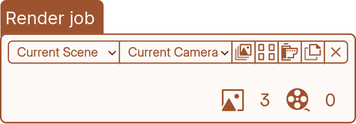
Under the row, two counts: how many still images the job will produce, and how many animations.
Choosing captures and views
Captures dropdown — Picks which captures this job includes.
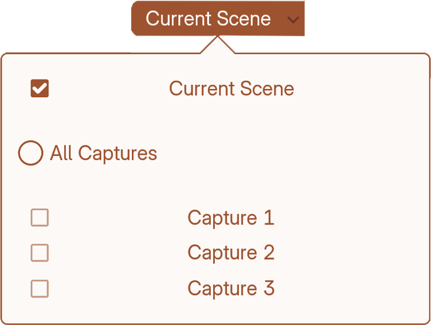
Views dropdown — Picks which views this job includes.
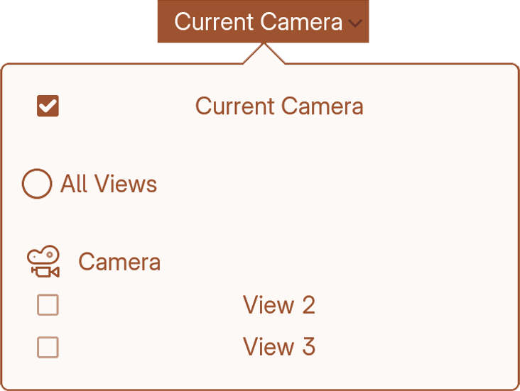
Variants
At the top it tells you how many images the job will produce, so you can watch that number as you add things.
Inside are the sections that shape the output:
Render Profile — a saved bundle of render settings.
Output — where files go and what they’re called, and whether each shot is a still, an animation or a playblast.
Then the variant axes. Each one is a list rather than a single setting, and each entry multiplies the job’s output:
Resolution · Format · Frames · Colour Management · Colorways · Compositor
Leave an axis empty and the job uses the scene’s setting.
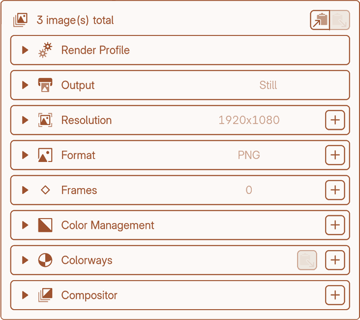
Render Profile
A saved bundle of render settings a job builds on. Set your quality once, then point as many jobs at it as you like.
You make a profile in Blender’s own Render Properties — engine, sampling, colour management, output format, passes — and Keep it stores it inside the .blend, not as a separate file.
What it doesn’t store: the frame range. That comes from the scene, or from a Frames variant. A profile describes how to render, never which frames.
The dropdown
Picks which profile the job uses. Left at Using capture/scene profile, the job renders with whatever the capture or the scene already has — no profile involved.
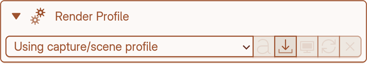
Add (⤓) — Saves the scene’s current Render Properties as a new profile.
Apply — Loads the profile into Render Properties so you can edit it natively.
Update (⟳) — Re-grabs the scene’s current Render Properties into this profile.
Rename — Renames the profile.
Remove — Deletes the profile.
Output
Type — Still, Animation or Playblast. Still renders one frame per shot, Animation renders a frame sequence, and Playblast is a raw viewport render that skips the render profile, colour management, colorways and compositor.
Name — The filename pattern for each render. Defaults to {capture}_{view}. Press + to insert a token.
Path — The folder renders are saved to. Tokens work here too.
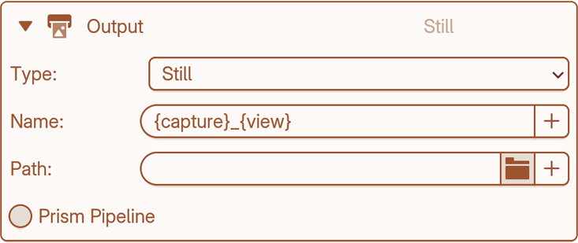
Tokens
{capture} {view} {camera} {resolution} {framerate} {framerange} {frame} {format} {look} {colorway} {compositor} {identifier} {version} {date_time}
Prism Pipeline
Keep it asks the running Prism session for the output path and version instead of using the Path and Name above.
Identifier — The Prism task name, such as banner or beauty. Available as {identifier}.
Version — Leave empty and Prism picks the next version.
Master — What happens to Prism’s master version after the job finishes.
Comment — Defaults to “Rendered via Keep it”.
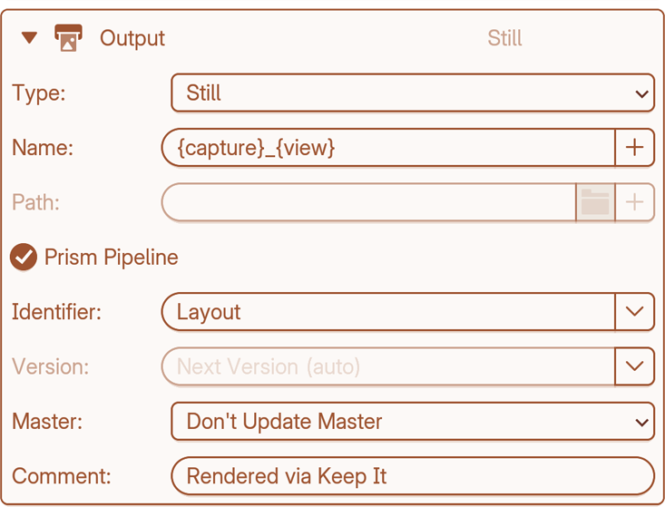
Variant axes
Resolution
Leave it empty and the job uses whatever the render profile sets, or the scene’s resolution if it has no profile. Press + to add a size. Each row is one resolution, and every row multiplies the job: two rows means every shot renders twice.
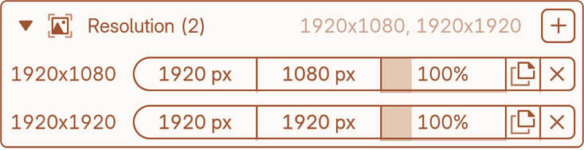
Format
Leave it empty and the job uses the profile’s format, or the scene’s if it has no profile. Press + to add a format; each row multiplies the job.
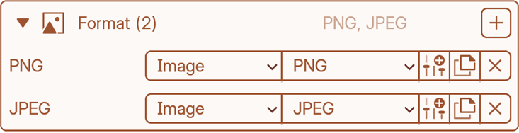
Frames
Renders each shot over more than one frame range. Leave it empty and the job uses the scene’s range, or an animated view’s own. Press + to add a range; each row multiplies the job.
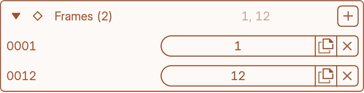
Colorways
Renders each shot with different materials swapped in. Leave it empty and materials come from the capture. Press + to add a colorway; each one multiplies the job.
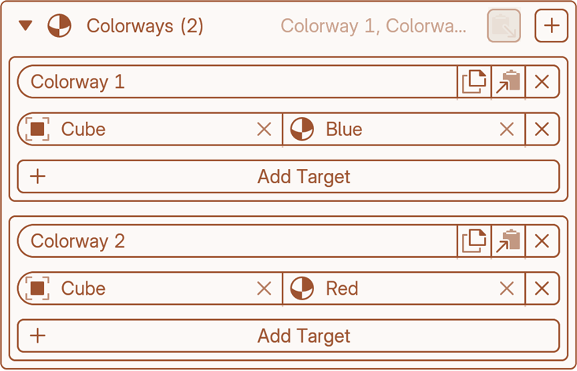
Colour Management
Renders each shot with more than one view transform or look. Leave it empty and the job uses the profile’s, or the scene’s. Press + to add one; each row multiplies the job.
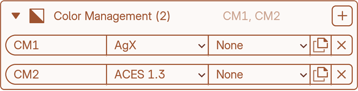
Compositor
Renders each shot through a different compositor node group. Leave it empty and the job uses the scene’s compositor. Press + to add one; each row multiplies the job.
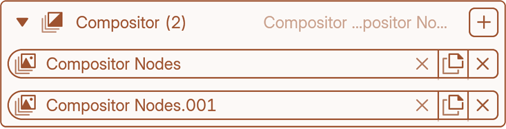
Contact Sheet
Every shot the job will render, as previews. One cell per capture × view × variant. Open it from the job or the Render panel.
It’s where you check a job before committing render time to it. Each cell shows a thumbnail and its label, and carries its own buttons.
The dropdown at the top orders the grid, and the render queue will follow.
Previews come in two speeds: a quick one (⟳) and a slower one through your render engine when you need to see what you’ll actually get. You can also export the whole grid as an image.
Sorting
None — natural order (default).
Exclude Last — included shots first.
Capture — grouped by capture.
View — grouped by view or camera.
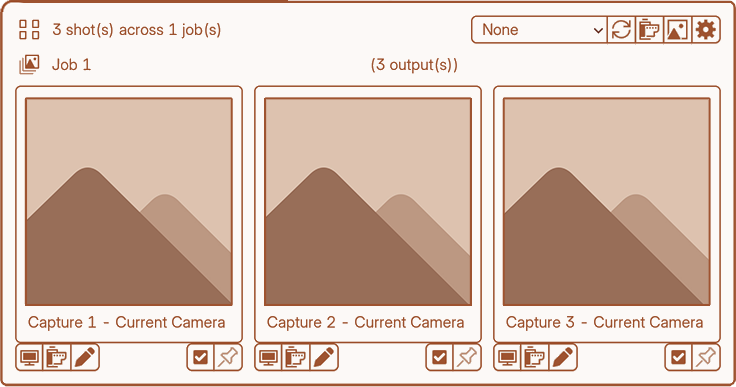
Contact Sheet settings
True Aspect Ratio — Letterboxes each preview at its real aspect instead of cropping it square. Regenerate previews to apply.
Preview Size — How large the cached previews are, in pixels. Bigger looks better and costs more to generate.
Contact Sheet Grid Thickness — The lines between cells in the exported contact-sheet image (2 px by default).
Preview render
Settings for the engine refresh button only. All of them are kept separate from the job’s real render settings, so previewing fast doesn’t change what you deliver.
Engine — Which engine to preview with. Can differ from the job’s.
Preview Samples — Sample count for previews, independent of the job’s.
Persistent Data — Keeps geometry data resident between preview renders.
Simplify — Caps subdivision and texture size while generating previews.
Override isolation
How a per-cell override is undone after its shot renders.
- Full — Restores the whole scene around the shot.
- Fast — Restores only what the override actually changed. Quicker, but relies on Blender reporting every change.
- Verify — Only for troubleshooting.
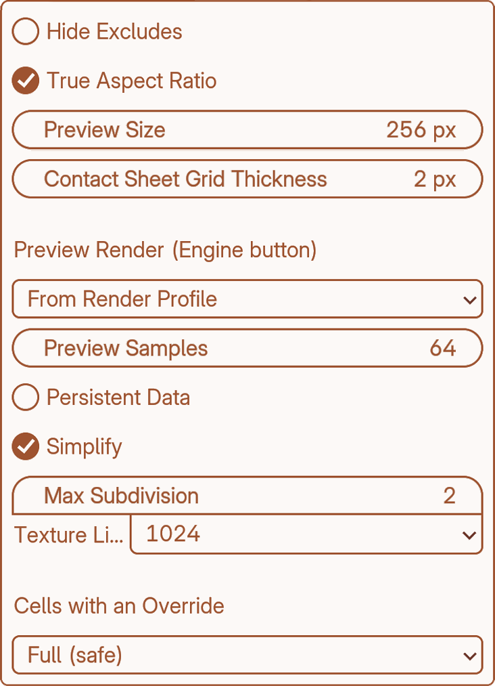
Cell
A cell is a capture, seen through a view, with one combination of variants.
Each cell shows the thumbnail, its label (capture + view + variant), and a dot (●) if it has an override. You can edit every image by hand.
Buttons
Apply — Restores that exact shot onto the scene so you can look at it live.
Render Thumbnail — Re-renders just this cell’s preview with the engine.
Edit — Opens the shot for editing. Adjust the scene, then Save or Cancel in the Render panel.
Reset — Only appears on a cell that has an override. Removes it, so the shot renders plain again.
Include/Exclude — Toggles whether this shot renders. Only affects rendering, not the capture or view itself.
Base capture — Chooses a capture this cell composes on top of. It fills in only what the cell’s own capture doesn’t set.
Render Settings
Auto Lock Interface — Enables Blender’s Lock Interface while Keep it renders. Recommended: it keeps renders stable by stopping the scene changing under them.
Switch to Solid Before Rendering — Sets viewports to Solid shading during the render, then puts them back. Stops the viewport re-rendering the scene alongside the render.
Autosave Before Rendering — Saves the .blend before a render starts, if it’s been saved once already.
Renders to Slots — Advances the Render Result slot for each shot, so the last few renders stay loaded in the Image Editor rather than only on disk.
Render In — Where the render appears:
- Keep User Interface — renders in the background, no popup.
- New Window — opens a render window so you can watch progress.
- Image Editor — shows it in an Image Editor instead.
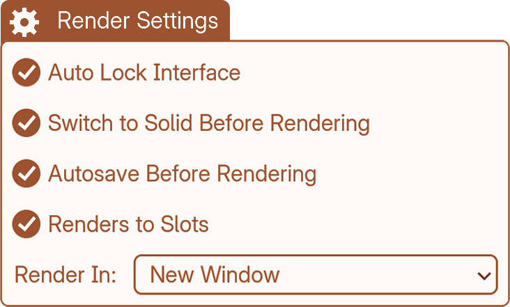